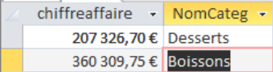
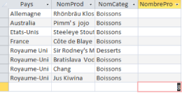
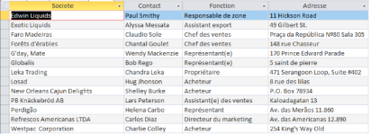
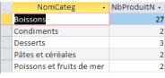
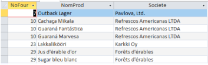

Mission 3
Cette mission a pour but d'analyser les données de l'entreprise pour ensuite produire des indicateurs pertinents pour l'évolution de l'entreprise
-
Desserts et Boissons
Nous analysons les desserts et boissons en lien avec la santé pour Kdou et ses clients Nous avons eu pour consigne de calculer le chiffre d'affaire généré par catégorie.
Voici les chiffres d'affaires des desserts et des boissons que nous avons récupéré par la requête SQL.
Cette requête est importante si Kdou veut savoir combien génèrent-t-il et les aider à investir ou réduire selon leur politique.Code SQL :

SELECT SUM(D.PrixUnitCli * D.QteCom) AS chiffreaffaire, C.NomCateg
FROM categorie AS C, fournisseur AS F, produit AS P, detailcommande AS D
WHERE P.NoFour = F.NoFour
AND D.RefProd = P.RefProd
AND C.CodeCateg = P.CodeCateg
AND C.NomCateg LIKE "Desserts"
GROUP BY C.NomCateg;
UNION ALL SELECT SUM(D.PrixUnitCli * D.QteCom) AS chiffreaffaire, C.NomCateg
FROM categorie AS C, fournisseur AS F, produit AS P, detailcommande AS D
WHERE P.NoFour = F.NoFour
AND D.RefProd = P.RefProd
AND C.CodeCateg = P.CodeCateg
AND C.NomCateg LIKE "Boissons"
GROUP BY C.NomCateg;
On veut savoir combien y a-t-il des produits correspondants vendus 50€ ou plus et leur pays d’origine.
Cet indicateur nous permet de savoir quel pays achète des produits plutot couteux.Code SQL :

SELECT Pays, NomProd, NomCateg, NULL AS NombreProduit
FROM Fournisseur F INNER JOIN (Produit AS P1 INNER JOIN Categorie AS C1 ON P1.CodeCateg = C1.CodeCateg ) ON F.NoFour = P1.NoFour
WHERE (NomCateg LIKE "Desserts" OR NomCateg LIKE "Boissons") AND (PrixUnit >= 50)
GROUP BY Pays, NomProd, NomCateg
UNION ALL SELECT NULL as Pays, NULL as NomProd, NULL as NomCateg, COUNT(*) AS NombreProduit
FROM Fournisseur F
INNER JOIN (Produit AS P1 INNER JOIN Categorie AS C1 ON P1.CodeCateg = C1.CodeCateg ) ON F.NoFour = P1.NoFour
WHERE (NomCateg LIKE "Desserts" OR NomCateg LIKE "Boissons") AND (PrixUnit >= 50);
-
L'offre de Kdou
Dans le grand 1, on cherche à comprendre l’impact sur la santé des produits que proposent Kdou. Cette requête nous permet donc de pouvoir comparer les chiffres d’affaires de ces différentes catégories de produits afin d’en savoir plus sur les différents envient de nos clients par catégories.
Ce sont les résultats auquel les fournisseurs qui ont des produits qui n'ont jamais été commandés. On pourrait utiliser ces informations afin de trouver d'autres fournisseurs qui n'ont que des produits vendus pour éviter les pertes ou bien dire aux fournisseurs qu'ils ont des produits non vendusCode SQL :

SELECT DISTINCT F.Societe, F.Contact, F.Fonction, F.Adresse
FROM Fournisseur AS F INNER JOIN Produit AS P ON F.NoFour = P.NoFour
WHERE (((Exists (SELECT DC.RefProd
FROM DetailCommande AS DC
WHERE DC.RefProd = P.RefProd)) =False));
Ce sont le nombre de produits non vendus par catégorie donc on peut dire aux fournisseurs que dans ces catégories de produits il y a tant de produits non vendus et réaction, réajusté les stocks par rapport a la catégorie, produire plus si la catégorie a peu de produits non vendus
sous-requête :
SELECT C.NomCateg, P.RefProd
FROM (Categorie AS C INNER JOIN Produit AS P ON C.CodeCateg = P.CodeCateg) LEFT JOIN DetailCommande AS DC ON P.RefProd = DC.RefProd
WHERE DC.RefProd IS NULL;
Code SQL :

SELECT [2b sous requête].NomCateg, Count([2b sous requête].RefProd) AS NbProduitNonVendu
FROM [2b sous requête]
GROUP BY [2b sous requête].NomCateg; -
Provenance des produits
Ici, nous étudions la provenance des produits de Kdou en se focalisant sur les desserts et boissons.
Voici les résultats des fournisseurs qui vendent uniquement des boissons et desserts.Code SQL :
SELECT Fournisseur.Societe
FROM Fournisseur
WHERE NoFour NOT IN ( SELECT DISTINCT Produit.NoFour
FROM Produit
WHERE Produit.CodeCateg NOT IN (1, 3) )
AND NoFour IN (
SELECT DISTINCT Produit.NoFour
FROM Produit
WHERE Produit.CodeCateg IN (1, 3) );
Maintenant, nous cherchons si il y a des fournisseurs qui vendent des boissons et des desserts.
Voici les résultats.SELECT DISTINCT P.NoFour, P.NomProd, F.Societe

FROM Produit AS P, Fournisseur AS F
WHERE P.CodeCateg = 1
AND F.NoFour = P.NoFour
AND P.NoFour IN (
SELECT DISTINCT P.NoFour
FROM Produit AS P
WHERE P.CodeCateg = 3 ); -
La clientèle
Dans cette partie, nous avons étudié la clientèle de Kdou et les remises